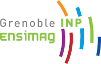

<div class="cv"><div class="cv__page"><div class="cv__header"><div class="cv__header__photo"></div><div class="cv__header__text"><h1>Antoine Brûlé</h1><p>Ingénieur logiciel junior spécialisé en systèmes d’information et informatique embarquée</p></div><div class="cv__header__dl"><div><a href="/cv.pdf" rel="noopener noreferrer">📄 PDF</a></div></div></div><div class="cv__body"><div class="cv__main"><table class="cv__list"><tr><th colspan="2"><h2 class="cv__title cv__title--green">Formation</h2></th></tr><tr><td><div><span>automne 2019</span></div></td><td><strong>Semestre d’échange à Polytechnique Montréal</strong><p>Intelligence artificielle, architectures logicielles, codecs multimédias, principes de game design et développement d’IA de jeux vidéo</p><p><em>Département de génie informatique et logiciel, Polytechnique Montréal, Québec, Canada</em></p></td></tr><tr><td><div><span>2017 – 2020</span></div></td><td><strong>Formation d’ingénieur logiciel – ENSIMAG</strong><p>Filière ingénierie des systèmes d’information</p><p><em>École nationale supérieure d’informatique et de mathématiques appliquées, Grenoble, France</em></p></td></tr><tr><td><div><span>2015 – 2017</span></div></td><td><strong>Diplôme Universitaire de Technologie (DUT) informatique</strong><p>Filière informatique embarquée</p><p><em>Institut Universitaire de Technologie de La Rochelle, France</em></p></td></tr><tr><th colspan="2"><h2 class="cv__title cv__title--pink">Expériences</h2></th></tr><tr><td><div><span>nov. 2020 – août 2021</span></div></td><td><strong>Mini-projets&nbsp;: exploration de nouvelles technologies et consolidation des acquis</strong><span class="cv__list__tags"><span>VueJS</span><span>NodeJS</span><span>WebSocket</span><span>Rust</span><span>Python</span><span>C</span><span>Godot</span></span><ul><li>Portage d'un logiciel de montage vidéo collaboratif sur une interface web</li><li>Participations à des événements <em>game jams</em>&nbsp;: création de jeux 2D en temps limité</li><li>Implémentation de jeux de plateau en ligne&nbsp;: jeu d'échecs, <em>Citadelles</em></li><li>Création et programmation d'une horloge murale circulaire à affichage LED</li></ul><p>Démos et plus d'infos : <a href="https://brule.info/projets" rel="noopener noreferrer">https://brule.info/projets</a></p></td></tr><tr><td><div><span>avril – octobre 2020</span></div></td><td><strong>Projet de fin d’études&nbsp;: portage du système Dronisos sur drones Pixhawk</strong><span class="cv__list__tags"><span>C++</span><span>Buildroot</span><span>Conan</span><span>Docker</span></span><p><em>Dronisos, Bordeaux, France</em></p><p>Adaptation et réécriture du logiciel embarqué de chorégraphie sur drones lumineux Dronisos équipés de cartes de vol <em>open-hardware</em> Pixhawk.</p><p>Ce projet a eu pour but d'étudier la faisabilité d'une transition vers de nouveaux modèles de drones afin d'étendre la capacité de la flotte Dronisos et remplacer les modèles arrivant en fin de vie.</p></td></tr><tr><td><div><span>juin – août 2019</span></div></td><td><strong>Stage Assistant Ingénieur en start-up&nbsp;: application web sur le thème de l’alimentation durable</strong><span class="cv__list__tags"><span>Web</span><span>Javascript</span><span>Python</span></span><p><em>Mooveat, Paris, France</em></p><p>Développement d’une application VueJS interfacée avec une API Django REST destinée à l’INRA et aux collectivités locales. Cette application fournit des informations sur les producteurs et distributeurs de denrées alimentaires locales, géolocalisés sur une carte dynamique. Travail poursuivi après le stage en freelance.</p></td></tr><tr><td><div><span>février – mai 2019</span></div></td><td><strong>Projet Ensimag – OS avancé&nbsp;: développement d’un système d’exploitation basique utilisant le jeu d’instructions RISC-V</strong><span class="cv__list__tags"><span>Assembleur</span><span>C</span></span><p>Amorçage, interfaçage avec le matériel, conception et implémentation du gestionnaire de mémoire virtuelle et de l’interface en ligne de commande, création de programmes de test.</p><p>Voir la démonstration&nbsp;: <a href="https://frama.link/EnsimagRibsOS" target="_blank" rel="noopener noreferrer">frama.link/EnsimagRibsOS</a></p></td></tr><tr><td><div><span>février – mai 2019</span></div></td><td><strong>Projet Fablab Ensimag&nbsp;: caméra suiveuse d’un intervenant</strong><span class="cv__list__tags"><span>C</span><span>C++</span><span>Qt</span></span><p><em>FabMSTIC, Université Grenoble-Alpes, Grenoble, France</em></p><p>Fabrication et programmation d’un support de caméra suivant un intervenant. Pilotage utilisant le protocole VISCA (création d’un contrôleur Bluetooth) et vision par ordinateur avec OpenCV et YOLOv3.</p><p>Plus d’infos&nbsp;: <a href="https://fablab.ensimag.fr/index.php?title=Amphi_connect%C3%A9" target="_blank" rel="noopener noreferrer">fablab.ensimag.fr/index.php?title=Amphi_connecté</a></p></td></tr><tr><td><div><span>juillet 2017</span></div></td><td><strong>Hackathon de 24 heures&nbsp;: Majordome 3.0</strong><span class="cv__list__tags"><span>Web</span><span>Javascript</span></span><p><em>Tiers-lieu numérique Cobalt, Poitiers, France</em></p><p>Conception et implémentation d’une web app en équipe ayant pour but de suivre et gérer automatiquement la consommation des appareils d’un ménage.</p><p>Gagnants du prix coup de cœur Enedis.</p></td></tr><tr><td><div><span>avril – juin 2017</span></div></td><td><strong>Stage professionnel sur le thème de la cybersécurité</strong><span class="cv__list__tags"><span>Linux</span><span>Bash</span><span>OpenVPN</span></span><p><em>National University of Ireland, Galway, Irlande</em></p><p>Implémentation d’un système d’information autonome et sécurisé avec mise à jour automatique des appareils et surveillance centralisée du réseau.</p></td></tr></table></div><div class="cv__aside"><div class="cv__aside__body"><h2 class="cv__title cv__title--yellow">Compétences</h2><h3>Langages et outils</h3><ul><li>Connaissances et expérience en C, C++, Java, Python, Bash, Rust</li><li>Outils d’administration de systèmes Linux</li><li>Développement de sites web&nbsp;:<ul><li>HTML, CSS (Sass)</li><li>Javascript/Typescript</li><li>Frameworks&nbsp;: VueJS, Django</li></ul></li><li>Utilisation de systèmes de gestion de bases de données (No)SQL: Redis, PostgreSQL, OracleDB</li><li>Intégration et déploiement continus (CI/CD)</li></ul><h3>Principes et conception logicielle</h3><ul><li>Modélisation mathématique de problèmes</li><li>Protocoles et administration réseau</li><li>Gestion de clés cryptographiques, certificats et chiffrement</li><li>Connaissance et implémentation de patrons de programmation orientée objet (OOP)</li><li>Architectures logicielles</li><li>Création d'interfaces graphiques, familiarité avec les problématiques UI/UX, d'internationalisation et d'accessibilité</li><li>Méthodes et algorithmes pour l’intelligence artificielle</li></ul><h3>Gestion de projet</h3><ul><li>Méthodologie agile (Kanban, Scrum)</li><li>Méthodologie de tests, assurance qualité (TDD)</li><li>Gestion de versions et collaboration (Git, revue par les pairs)</li></ul><h3>Compétences linguistiques</h3><ul><li>Anglais professionnel et technique</li></ul><h2 class="cv__title cv__title--orange">Centres d’intérêt</h2><ul><li>Implication dans des projets libres et open source (FOSS), participation associative</li><li>Tennis, squash, vélo</li><li>Typographie et composition graphique</li><li>Cuisine et techniques culinaires</li><li>Bricolage</li></ul></div><div class="cv__contact"><h2>Contactez-moi</h2><div><p>E-mail&nbsp;: <b><a href="mailto:antoine@brule.info">antoine@brule.info</a></b></p><p class="show-print">→ Retrouvez ce CV à jour et plus de détails sur <b><a href="https://brule.info/cv">brule.info/cv</a></b></p></div></div></div></div></div></div>